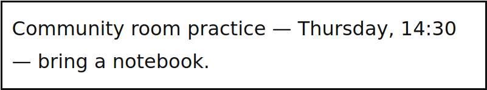

<!doctype html><html lang="en"><meta charset="utf-8"><title>Academy Routine Lab</title><style>body{margin:0;background:#eef2f6;color:#162f45;font:32px/1.5 system-ui}main{margin:100px 170px;max-width:1580px}h1{font-size:46px;margin:0 0 30px}h2{font-size:38px;margin:8px 0}section{padding:30px 42px;background:white;border:2px solid #c0ccd8;border-radius:14px;margin:20px 0}p{margin:15px 0}textarea{font:38px/1.7 system-ui;width:94%;height:170px;border:2px solid #526b7d;padding:20px;color:#162f45}button{font:30px system-ui;padding:14px 30px;margin:12px 15px 0 0;border:2px solid #17364f;background:#eef5fc;border-radius:10px;color:#17364f}mark{background:#ffd961}label{display:block}input{font:28px system-ui;min-height:35px;border:0;border-bottom:2px solid #526b7d}.fields{display:flex;gap:26px}.fields label{font-size:24px}.fields input{width:240px}.row{border-bottom:1px solid #cbd5e1;padding:20px}.flow{display:flex;flex-wrap:wrap;gap:20px}.node{padding:25px;background:#e7eff6;border:2px solid #17364f;border-radius:12px}small{font-size:22px}.selected{background:#d9eaff;padding:15px}img{max-width:90%;max-height:300px}</style><main><small>ACADEMY ROUTINE LAB · fictional practice</small><div id="view"></div></main><script>
const source='Community room practice — Thursday, 14:30 — bring a notebook.';const output='Practice reminder. Thursday, 14:30. Bring a notebook.';const v=new URLSearchParams(location.search).get('view')||'overview';const box=document.querySelector('#view');const speak=()=>{speechSynthesis.cancel();speechSynthesis.speak(new SpeechSynthesisUtterance(output))};window.speak=speak;window.pause=()=>speechSynthesis.pause();window.replay=speak;
const fields=()=>['Accuracy','Effort','Time','Privacy','Easy to correct'].map(x=>'<label>'+x+'<input aria-label="'+x+'"></label>').join('');
const views={overview:'<h1>Choose a comfortable route</h1><section><h2>Voice input</h2><p>Dictate → review the transcript</p></section><section><h2>Camera input</h2><p>Recognize → compare with the original</p></section><section><h2>Spoken output</h2><p>Listen → pause → replay</p></section>',source:'<h1>Original fictional reminder</h1><section><h2>Source card</h2><p>'+source+'</p></section>',capture:'<h1>Camera route</h1><section><h2>Source image</h2><p>Community room practice — Thursday, 14:30 — bring a notebook.</p></section><section><h2>Editable recognized text</h2><textarea aria-label="Recognized text">'+source+'</textarea></section>',edit:'<h1>Compare with the original</h1><section><textarea id="edit" aria-label="Editable recognized text">'+source+'</textarea><p>Time to check: <mark>14:30</mark></p></section>',output:'<h1>Practice reminder</h1><section><p>Thursday, 14:30</p><p>Bring a notebook.</p></section>',speak:'<h1>Spoken output</h1><section><p class="selected">'+output+'</p><button onclick="speak()">Speak selected text</button><button onclick="pause()">Pause</button><button onclick="replay()">Replay</button></section>',routes:'<h1>Two routes, one reminder</h1><section><h2>CAMERA ROUTE</h2><p>Source image → recognized text → compare</p><p>'+source+'</p></section><section><h2>MANUAL ROUTE</h2><p>Type → compare → spoken output</p><p>'+source+'</p><button onclick="speak()">Read aloud</button></section>',compare:'<h1>Record actual observations</h1><section><h2>CAMERA ROUTE</h2><div class="fields">'+fields()+'</div></section><section><h2>MANUAL ROUTE</h2><div class="fields">'+fields()+'</div></section>',fallback:'<h1>Keep a manual route</h1><section><h2>Large text</h2><p>'+source+'</p></section><section><h2>Voice input</h2><p>Review names, numbers and punctuation.</p></section><section><h2>Offline manual note</h2><p>'+source+'</p></section>',workflow:'<h1>Accessible personal routine</h1><section class="flow">'+['Choose task','Capture','Check','Adapt','Use','Fallback'].map(x=>'<span class="node">'+x+'</span>').join(' → ')+'</section><section><h2>Usability check</h2><p>Test with the learner and device.</p></section>',finish:'<h1>Test the actual task</h1><section><p>'+source+'</p></section><section><label><input type="checkbox"> Checked</label><label><input type="checkbox"> Usable</label><label><input type="checkbox"> Fallback</label></section>'};box.innerHTML=views[v];if(v==='edit'){const t=document.querySelector('#edit');t.focus();const i=source.indexOf('14:30');t.setSelectionRange(i,i+5)}
</script></html>